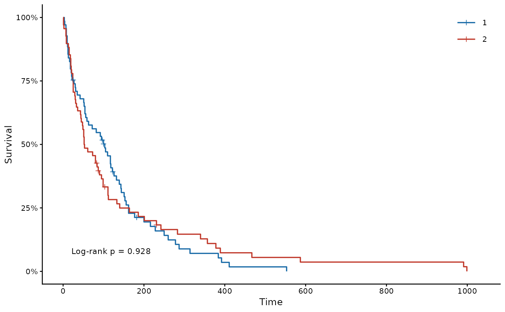
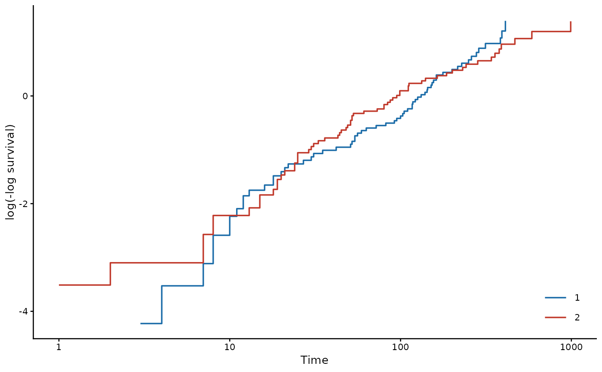
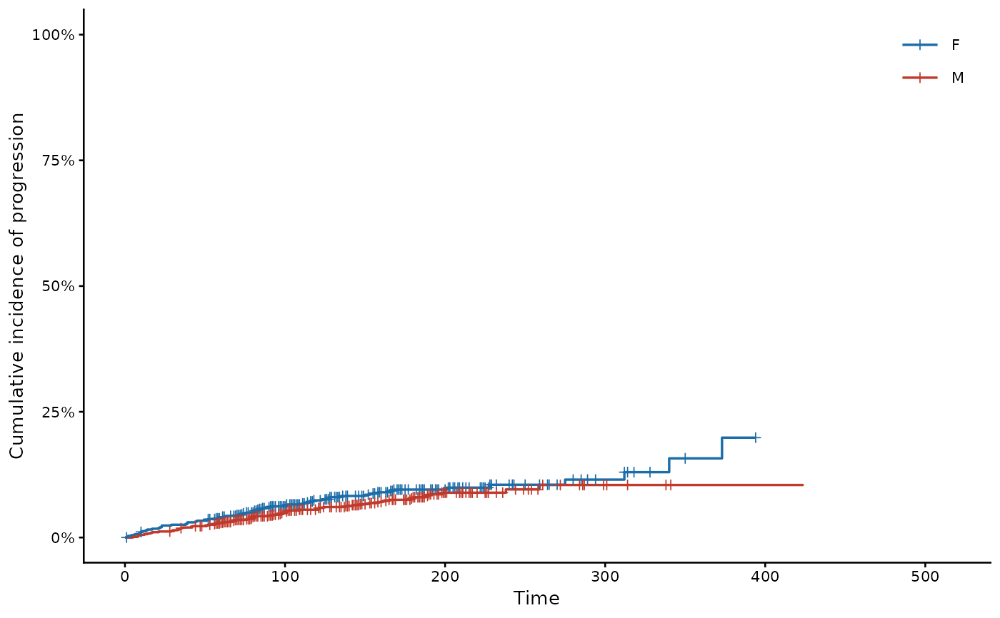
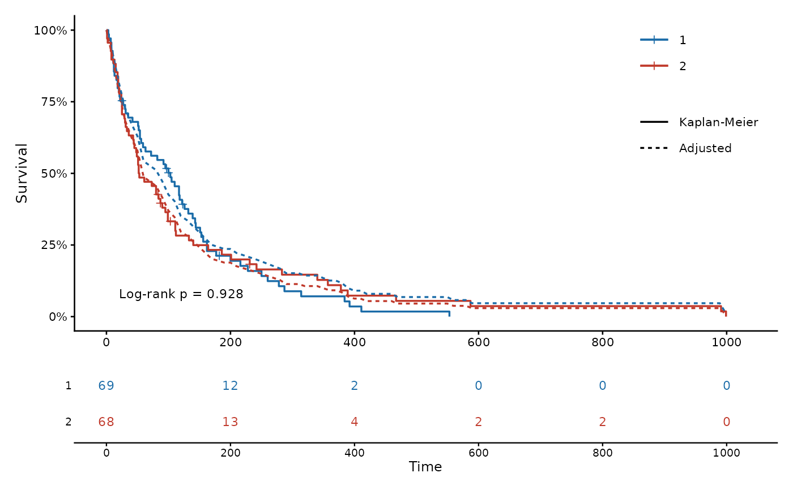

Draws Kaplan-Meier curves in a publication style: step curves with censoring marks, the legend inside the panel, an optional log-rank p-value, and a number-at-risk table coloured by group under the plot. Besides the survival function, it draws the risk function, the cumulative hazard, the complementary log-log diagnostic of proportional hazards, and cumulative incidence under competing risks. A fitted survalis model adds its predicted or covariate-adjusted curves, dashed, over the Kaplan-Meier curves.
Usage
kmplot(
formula,
data,
type = c("survival", "risk", "cumhaz", "cloglog"),
event = NULL,
model = NULL,
model.curve = c("predicted", "adjusted"),
title = NULL,
xlab = "Time",
ylab = NULL,
breaks = NULL,
pval = TRUE,
risk.table = TRUE,
conf.int = FALSE,
colors = NULL,
legend.pos = NULL,
pval.pos = NULL,
base_size = 10
)Arguments
- formula
A survival formula such as
Surv(time, status) ~ 1orSurv(time, status) ~ group, as insurvival::survfit(). When the status is a factor whose first level is censoring and whose other levels are competing events, the plot shows the Aalen-Johansen cumulative incidence ofevent.- data
A data frame holding the variables in
formula.- type
What to draw:
"survival"(default) for \(S(t)\),"risk"for \(1 - S(t)\),"cumhaz"for the cumulative hazard \(H(t) = -\log S(t)\), or"cloglog"for \(\log\{-\log S(t)\}\) against \(\log t\), where parallel curves support proportional hazards. Competing-risks data take"risk"only, which is also their default.- event
Competing-risks data only: the event whose cumulative incidence is drawn.
NULL(default) takes the first event level.- model
Optional fitted model from
fit(). Its curves are drawn dashed over the Kaplan-Meier curves, so that the two can be compared. Not available for competing-risks data.- model.curve
"predicted"(default) averages the predicted survival of the subjects in each group, a calibration check of the model."adjusted"sets the single grouping variable to each of its levels for every subject and averages the predictions (G-computation), which gives covariate-adjusted curves.- title
Panel title, for example
"A. Overall survival".NULL(default) draws none.- xlab, ylab
Axis labels.
ylab = NULLuses a label fortype.- breaks
Time breaks for the x axis and the risk table.
NULL(default) usespretty()over the follow-up.- pval
Log-rank p-value when there are two or more groups:
TRUE(default) computes it withsurvival::survdiff(),FALSEomits it, and a character string is printed as given. It is not computed for competing-risks data or fortype = "cloglog", where only a string is printed.- risk.table
Logical; draw the number-at-risk table (default
TRUE). Needs the 'patchwork' package. Not drawn fortype = "cloglog", whose time axis is on the log scale.- conf.int
Logical; draw pointwise 95% confidence bands (default
FALSE).- colors
Group colours.
NULL(default) uses blue and red for the first two groups, then further distinct colours.- legend.pos
Legend position inside the panel,
c(x, y)in[0, 1]units of the panel.NULL(default) chooses a corner away from the curves.- pval.pos
P-value position,
c(time, y)in data units.NULL(default) chooses a corner away from the curves.- base_size
Base font size (default
10).
Value
A 'patchwork' object (curve over risk table) when the risk table is
drawn, otherwise a 'ggplot2' object. Panels combine with patchwork
operators, for example kmplot(...) | kmplot(...).
Examples
kmplot(Surv(time, status) ~ trt, data = veteran, risk.table = FALSE)

kmplot(Surv(time, status) ~ trt, data = veteran, type = "cloglog")

# Competing risks: progression versus death without progression
d <- survival::mgus2
d$etime <- ifelse(d$pstat == 1, d$ptime, d$futime)
d$event <- factor(ifelse(d$pstat == 1, 1, 2 * d$death), 0:2,
c("censored", "progression", "death"))
kmplot(Surv(etime, event) ~ sex, data = d, risk.table = FALSE)

# \donttest{
if (requireNamespace("patchwork", quietly = TRUE)) {
kmplot(Surv(time, status) ~ trt, data = veteran,
title = "A. Overall survival", xlab = "Days",
breaks = seq(0, 1000, 200))
# Covariate-adjusted curves from a Cox model, over the Kaplan-Meier curves
m <- fit(Surv(time, status) ~ trt + karno + age, data = veteran,
model = "coxph")
kmplot(Surv(time, status) ~ trt, data = veteran, model = m,
model.curve = "adjusted", breaks = seq(0, 1000, 200))
}

# }